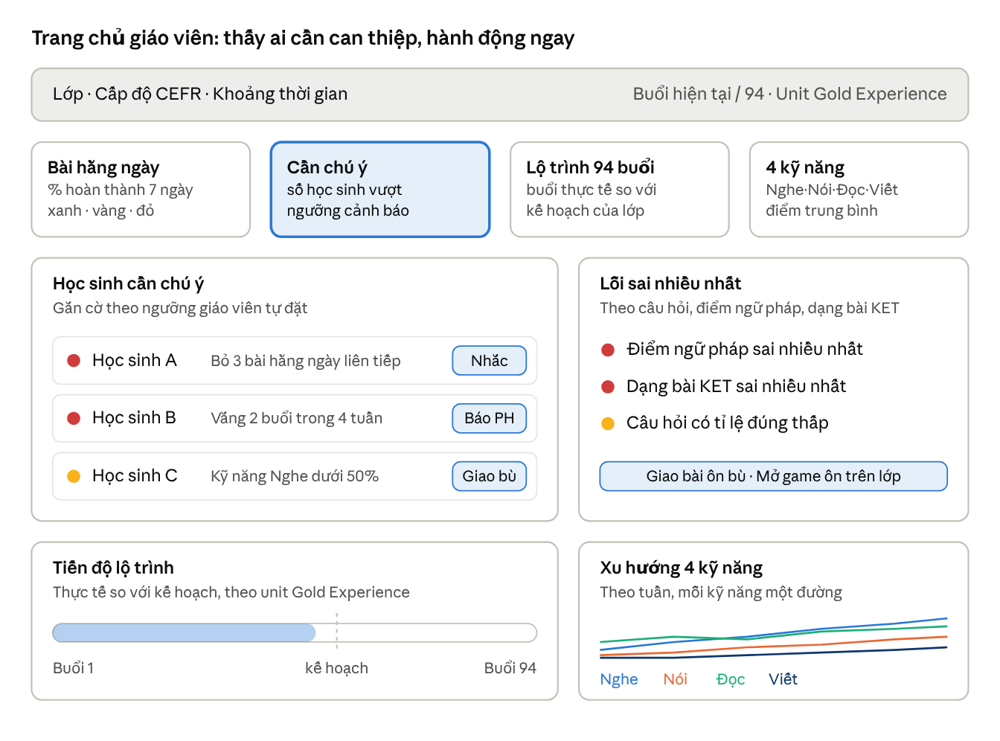
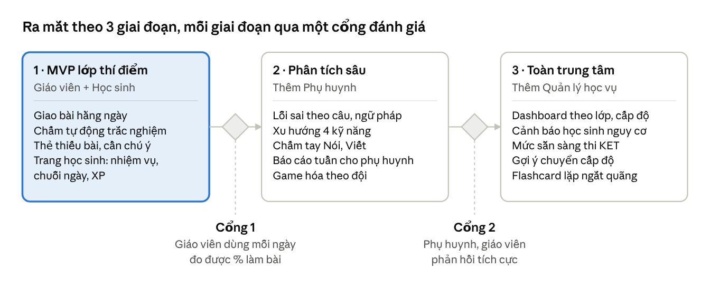

Đề xuất Dashboard quản trị học tập – Website Teen IVY
Tóm tắt đề xuất
Đề xuất tối ưu là một hệ dashboard 4 vai trò (Giáo viên, Học sinh, Phụ huynh, Quản lý học vụ), mỗi màn hình chỉ trả lời 3–5 câu hỏi quan trọng nhất của vai trò đó, thay vì một trang tổng hợp mọi số liệu.
Không có sản phẩm nào trên thị trường khớp hoàn toàn với IVY, nên phương án tốt nhất là ghép các điểm mạnh đã được kiểm chứng:
Canvas / Google Classroom: danh sách học sinh cần can thiệp (thiếu bài, nộp muộn) và nút nhắc nhở ngay tại chỗ.
Wayground (Quizizz): báo cáo theo từng câu hỏi, tô màu, để biết lớp sai ở kỹ năng nào.
Duolingo for Schools: đèn tín hiệu xanh–vàng–đỏ cho bài tập hằng ngày và chỉ tiêu điểm XP.
Cambridge One: chấm cả mục ngoài máy (chuyên cần, nói, dự án) và cho giáo viên sửa điểm tự động.
ClassDojo / sổ liên lạc điện tử VN: kênh phụ huynh nhận tiến độ và nhận xét.
Điểm khác biệt dành riêng cho IVY: theo dõi tiến độ theo lộ trình 94 buổi và unit Gold Experience, theo 4 kỹ năng CEFR và dạng bài KET, cùng cơ chế game hóa theo đội và so với chính mình, tránh bảng xếp hạng cá nhân toàn lớp.
Yêu cầu của dự án Website Teen
Dashboard phải phục vụ một website giao bài tập tương tác và quản trị hoạt động học tập cho học sinh THCS tại IVY. Các yêu cầu rút ra từ project:
| Yêu cầu | Hệ quả cho dashboard |
|---|---|
| Lớp xếp theo năng lực CEFR 4 kỹ năng, không theo khối | Lọc và báo cáo theo cấp độ (Foundation, Bridge-up, Kick-off, Boost, IELTS Skills up) và theo kỹ năng Nghe–Nói–Đọc–Viết |
| 2 buổi tại trung tâm/tuần (105 phút) + bài tập hằng ngày | Theo dõi tỉ lệ hoàn thành bài hằng ngày, chuỗi ngày học, cảnh báo sớm khi bỏ bài |
| Lộ trình 94 buổi bám theo unit Gold Experience | Thanh tiến độ theo buổi/unit, so sánh tiến độ thực tế với kế hoạch |
| Khóa học mở bất kỳ thời điểm nào | Mỗi lớp có mốc thời gian riêng; không dùng học kỳ cố định |
| Định hướng chứng chỉ Cambridge (KET...) | Báo cáo theo dạng bài thi và mức sẵn sàng thi |
| Ngữ pháp là nền tảng, không chạy theo điểm trường | Theo dõi mức thành thạo từng điểm ngữ pháp, không chỉ điểm tổng |
| Học sinh 10–15 tuổi, dùng nhiều game (escape room, Jeopardy, flashcard lặp ngắt quãng...) | Game hóa theo đội, điểm XP, huy hiệu; ưu tiên tự so với chính mình |
Một câu hỏi còn mở: IVY đang dùng phần mềm quản lý trung tâm nào (học phí, điểm danh) để dashboard đồng bộ dữ liệu, hay website sẽ tự quản lý luôn?
Các dashboard tham khảo và bài học rút ra
Bài học chung từ nghiên cứu: dashboard hiệu quả chọn 3–5 chỉ số cho mỗi đối tượng và ẩn phần còn lại; lỗi phổ biến nhất là hiển thị mọi thứ mà không giúp ai ra quyết định (Fora Soft). Dashboard của học sinh nên trả lời: bài nào đến hạn, mình đang chậm ở đâu, nên làm gì trước (FanRuan).
Google Classroom Analytics — Gom dữ liệu hoạt động của từng lớp vào một chỗ và giúp giáo viên nhận ra học sinh cần hỗ trợ. Từ một học sinh hoàn thành ít bài, giáo viên bấm xuống danh sách bài còn thiếu để theo dõi (Google). Lưu ý: chỉ có ở gói Education Plus.
Canvas New Analytics — Mỗi bài tập hiện tỉ lệ nộp đúng hạn, muộn, thiếu; giáo viên nhắn tin ngay cho nhóm học sinh thiếu bài hoặc dưới một mức điểm (Mount Holyoke). Báo cáo "học sinh cần chú ý" cho giáo viên tự đặt ngưỡng (tỉ lệ muộn, số bài thiếu) (Yale). Đây là mô hình "thấy vấn đề → hành động ngay" mà IVY nên học.
Wayground (trước là Quizizz) — Báo cáo tô màu theo từng câu hỏi, nhìn qua là biết lớp sai câu nào (Edutopia). Có biểu đồ tiến bộ dài hạn và chia sẻ báo cáo cho phụ huynh. Chế độ cho làm lại câu sai khuyến khích sự kiên trì (Alice Keeler).
Duolingo for Schools — Cạnh tên học sinh có màu cho biết số bài đã xong (xanh), nộp muộn (vàng), bỏ lỡ (đỏ). Giáo viên đặt chỉ tiêu XP cho từng bài giao (FSR). Rất hợp với nhịp bài tập hằng ngày của IVY.
Cambridge One — Có "grading categories" để chấm các mục ngoài máy như chuyên cần, thái độ, dự án; quản trị viên có thể cho giáo viên sửa điểm chấm tự động. Đây cũng là nền tảng đi kèm giáo trình Cambridge, đáng cân nhắc tích hợp.
ClassDojo — Mạnh ở kết nối phụ huynh: điểm thưởng hành vi và tin nhắn. Nhiều phụ huynh và giáo viên phàn nàn về cơ chế trừ điểm vì tạo cảm giác tiêu cực (Capterra).
Phần mềm trung tâm ngoại ngữ ở Việt Nam (EasyEdu, Schooly, EClass) — Phụ huynh quen với "sổ liên lạc điện tử": điểm danh, bài tập về nhà, nhận xét của giáo viên (Schooly). Các hệ này mạnh về vận hành (học phí, xếp lớp) nhưng yếu về phân tích kỹ năng.
Nghiên cứu về game hóa — Bảng xếp hạng là yếu tố game hóa bị gắn với nhiều tác dụng tiêu cực nhất, như giảm thành tích (Toda và cộng sự, 2018); không phải học sinh nào cũng hưởng lợi từ nó (NSF PAR).
Bảng so sánh tính năng
Không nền tảng nào phủ đủ nhu cầu IVY; cột cuối cho thấy website riêng cần gom những gì.
| Tính năng | Google Classroom | Canvas | Wayground | Duolingo Schools | Cambridge One | ClassDojo / app VN | Website Teen IVY (đề xuất) |
|---|---|---|---|---|---|---|---|
| Danh sách học sinh thiếu/muộn bài | Có | Có, kèm nhắn tin | Một phần | Có, màu xanh–vàng–đỏ | Có | Sổ liên lạc | Có, kèm nhắn tin + màu |
| Phân tích theo từng câu/kỹ năng | Theo kỹ năng gắn thẻ | Theo bài | Mạnh, theo câu | Hạn chế | Theo giáo trình | Không | Theo câu, điểm ngữ pháp, 4 kỹ năng |
| Tiến độ theo giáo trình | Không | Theo module | Không | Theo khóa Duolingo | Theo sách Cambridge | Không | Theo 94 buổi, unit Gold Experience |
| Chấm mục ngoài máy (nói, chuyên cần) | Thủ công | Có | Không | Không | Có (grading categories) | Điểm hành vi | Có |
| Game hóa | Không | Không | Mạnh (điểm, bảng xếp hạng) | XP, chuỗi ngày | Ít | Điểm hành vi | XP, huy hiệu, thi đua đội |
| Phụ huynh xem tiến độ | Email tóm tắt | Tài khoản phụ huynh | Chia sẻ báo cáo | Không | Không | Mạnh | Có, tóm tắt tuần |
| Phù hợp tiếng Anh THCS VN | Trung bình | Thấp (nặng đại học) | Cao | Trung bình | Cao | Cao (vận hành) | Cao |
Kiến trúc dashboard theo vai trò
Mỗi vai trò có một trang chủ riêng, tối đa 5 chỉ số, và mọi chỉ số đều bấm được để xuống chi tiết hoặc hành động.
| Vai trò | Câu hỏi cần trả lời ngay | Chỉ số chính (3–5) | Hành động từ dashboard |
|---|---|---|---|
| Giáo viên | Hôm nay ai cần mình can thiệp? Lớp đang hổng kiến thức gì? Lớp có theo kịp lộ trình? | Tỉ lệ hoàn thành bài hằng ngày (7 ngày); số học sinh cần chú ý; câu/điểm ngữ pháp sai nhiều nhất; buổi thực tế so với kế hoạch; điểm TB 4 kỹ năng | Nhắn nhắc học sinh thiếu bài; giao bài ôn bù cho nhóm yếu; mở game ôn trên lớp; chấm nói/viết |
| Học sinh | Hôm nay làm gì? Mình tiến bộ đến đâu? | Nhiệm vụ hôm nay; chuỗi ngày học; XP tuần so với tuần trước; huy hiệu sắp đạt; tiến độ unit | Làm bài, chơi game ôn, lật flashcard lặp ngắt quãng, xem lại câu sai |
| Phụ huynh | Con có học đều không? Con mạnh/yếu ở đâu? | Chuyên cần buổi tại trung tâm; % bài hằng ngày hoàn thành; xu hướng điểm 4 kỹ năng; nhận xét giáo viên | Nhắn giáo viên; xem báo cáo tuần; xác nhận đã xem |
| Quản lý học vụ | Lớp nào, giáo viên nào cần hỗ trợ? Học sinh nào có nguy cơ bỏ học? | Tỉ lệ hoàn thành theo lớp/cấp độ; học sinh nguy cơ (vắng + bỏ bài); tiến độ lớp so kế hoạch; mức sẵn sàng thi KET | Xem lớp, gửi ghi chú cho giáo viên, lập danh sách gọi phụ huynh, đề xuất chuyển cấp độ |
Nguyên tắc "học sinh cần chú ý" (theo mô hình Canvas): học sinh được gắn cờ khi vượt một ngưỡng giáo viên tự đặt, ví dụ bỏ từ 3 bài hằng ngày liên tiếp, vắng 2 buổi trong 4 tuần, hoặc độ chính xác một kỹ năng dưới 50%. Các ngưỡng này là gợi ý ban đầu, IVY nên điều chỉnh sau vài tuần chạy thử.
Chi tiết màn hình Dashboard giáo viên
Trang chủ giáo viên đặt danh sách "học sinh cần chú ý" và nút hành động ở vị trí nổi bật nhất, vì đó là việc giáo viên cần làm mỗi ngày.

Bố cục trang chủ giáo viên · 4 thẻ chỉ số, 4 khối chi tiết
Đọc từ trên xuống: bộ lọc lớp và buổi hiện tại, 4 thẻ chỉ số (thẻ "Cần chú ý" được nhấn mạnh), rồi hai khối hành động và hai khối xu hướng. Tên học sinh và lý do trong hình chỉ là ví dụ.
Cách hoạt động của từng khối:
Bài hằng ngày: bấm vào ra lưới học sinh × ngày, mỗi ô xanh (đúng hạn), vàng (muộn), đỏ (bỏ), theo kiểu Duolingo.
Học sinh cần chú ý: mỗi dòng có lý do gắn cờ và một nút hành động (nhắc học sinh, báo phụ huynh, giao bài bù), theo kiểu Canvas.
Lỗi sai nhiều nhất: gom theo câu hỏi, điểm ngữ pháp và dạng bài KET, theo kiểu báo cáo tô màu của Wayground; một nút tạo ngay bài ôn hoặc game ôn cho buổi tới.
Tiến độ lộ trình: so buổi thực tế với kế hoạch 94 buổi; lớp chậm quá 2 buổi thì thẻ chuyển màu cảnh báo.
Xu hướng 4 kỹ năng: gồm cả điểm chấm tay (Nói, Viết, chuyên cần) như grading categories của Cambridge One; giáo viên được sửa điểm chấm tự động.
Game hóa an toàn cho tuổi teen
Giữ sức hút của game nhưng tránh so sánh cá nhân công khai, vì bảng xếp hạng là yếu tố dễ gây phản tác dụng nhất và học sinh lớp 7–9 vốn ngại bị đem ra so sánh trước bạn bè.
| Nên dùng | Thay cho | Lý do |
|---|---|---|
| Bảng xếp hạng theo đội trong lớp, đổi đội theo tháng | Bảng xếp hạng cá nhân toàn lớp | Hợp với khuyến nghị chơi theo đội cho lớp 7–9; học sinh yếu không bị lộ |
| "Kỷ lục của em": XP tuần này so với tuần trước | Thứ hạng tuyệt đối | Học sinh nào cũng có thể tiến bộ |
| Chỉ cộng điểm, không trừ điểm | Trừ điểm hành vi kiểu ClassDojo | Phản hồi từ người dùng ClassDojo cho thấy trừ điểm gây cảm giác tiêu cực |
| Huy hiệu cho sự kiên trì (làm lại câu sai, chuỗi 7 ngày) | Huy hiệu chỉ cho điểm cao | Khuyến khích thói quen học hằng ngày |
| Bảng xếp hạng cá nhân chỉ trong game trực tiếp trên lớp, tự xóa sau buổi | Bảng xếp hạng lưu vĩnh viễn | Giữ không khí thi đua ngắn hạn mà không đóng dấu lâu dài |
Tùy cấp độ, giao diện cũng nên đổi phong cách: lớp có nhiều học sinh lớp 5–6 dùng màu sắc, nhân vật; lớp có học sinh lớp 8–9 dùng giao diện tối giản, nhấn vào mục tiêu KET và tiến độ thực.
Lộ trình triển khai
Bắt đầu bằng MVP cho giáo viên và học sinh ở 1–2 lớp thí điểm (ví dụ Bridge-up và Kick-off), rồi mới mở rộng sang phụ huynh và quản lý học vụ.

Lộ trình triển khai · 3 giai đoạn, 2 cổng đánh giá
Mỗi giai đoạn chỉ sang bước tiếp khi qua cổng đánh giá; thời lượng từng giai đoạn cần IVY chốt theo nguồn lực lập trình.